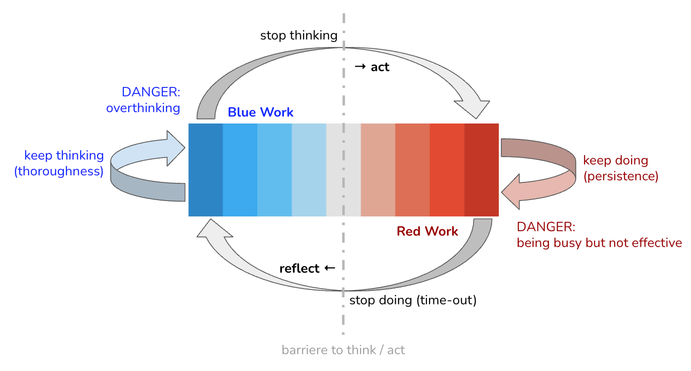

Leading with Language: Six Plays for Grounded IT Architects

IN THIS SECTION, YOU WILL: Understand how IT Architects can transform their effectiveness and foster a more collaborative, innovative, and grounded practice by consciously applying David Marquet’s six linguistic leadership plays to better navigate the complexities of modern technology environments.
KEY POINTS:
- IT Architects can significantly enhance their leadership and influence by adopting six key communication “plays” from David Marquet’s “Leadership is Language,” moving beyond outdated Industrial Age command-and-control styles.
- These plays—Control the Clock, Collaborate, Commit, Complete, Improve, and Connect—provide practical linguistic tools to foster better thinking (Bluework), more effective execution (Redwork), and stronger team engagement.
- Applying these plays helps architects build trust, flatten power gradients, encourage psychological safety, and unlock discretionary effort, leading to more robust architectural solutions and greater buy-in.
- The principles align directly with a “Grounded Architecture” approach by promoting data-driven decisions, collaborative networks, adaptability, and strategic impact within organizations.
- By consciously changing their language, architects can cultivate a more innovative, resilient, and effective engineering culture.
Architects are not just technical designers; they have transformed into strategic leaders, and facilitators of collaboration, all essential for navigating complexity and driving business value. This expanded role necessitates a sophisticated approach to leadership that moves away from traditional “command and control” models. These outdated paradigms, rooted in the Industrial Age, are ill-suited for the dynamic, knowledge-driven environment we face in modern IT, where architects often lead by influence rather than direct authority. In this context, I believe communication is not just a skill—it is the primary tool of leadership.
One resource that resonates with my experiences is L. David Marquet’s seminal work, “Leadership is Language.” As a former U.S. Navy Captain, Marquet illustrates how the words leaders use profoundly shape team culture, effectiveness, and overall success. His argument—that subtle shifts in language can catalyze significant improvements in team performance and well-being—challenges entrenched leadership paradigms and offers what he calls a “New Playbook” for contemporary challenges. From my perspective, the core of this new playbook lies in recognizing that the nature of work has changed. Industrial Age leadership focused on maximizing efficiency and ensuring compliance for predominantly physical, repetitive tasks. However, the field of IT architecture requires complex, cognitive, and collaborative teamwork. This type of work thrives not on mere compliance, which often results in minimal effort, but on commitment, which unlocks discretionary effort and innovation. I’ve seen firsthand that applying outdated leadership language to architectural work can inadvertently stifle creativity and engagement. Organizations that fail to adapt their leadership language within their architectural practices may struggle with innovation, adaptability, and the ability to attract and retain top talent.
The principles in “Leadership is Language” resonate with my approach to “Grounded Architecture.” Marquet’s six leadership “plays” provide practical linguistic tools that align perfectly with these tenets. They empower architects to foster clearer communication, enable deeper thinking, and build stronger, more committed teams, helping us become more truly “grounded.” A critical, and often invisible, barrier that I’ve observed IT architects must consciously address is the “power gradient”—the perceived hierarchical distance between individuals. I’ve found that steep power gradients can stifle creativity, suppress valuable input, and hinder open communication, all of which are detrimental to effective architectural practices. Architects frequently navigate complex organizational structures where these gradients are prevalent. If we don’t manage these dynamics through intentional language, true collaboration—a cornerstone of Grounded Architecture—cannot flourish. Marquet’s plays offer concrete strategies to flatten these gradients and promote more inclusive and effective interactions, which I believe are essential for our success.
Setting the Stage: From “Redwork/Bluework” to Effective Action
Before exploring specific plays, it’s essential to grasp a fundamental concept from Marquet’s framework: the distinction between “Redwork” and “Bluework.” This distinction clarifies the different operational modes within any team and highlights the importance of balancing them for optimal performance.
Redwork refers to the “doing” or “execution” phase of any project. It emphasizes performance, efficiency, and minimizing variability to achieve a specific outcome. In the context of IT architecture, Redwork includes activities such as coding a proof-of-concept based on a defined specification, meticulously documenting a finalized architectural design, or implementing a system according to a detailed plan. The primary focus during Redwork is on execution and achieving predetermined goals.
Bluework, on the other hand, represents the “thinking” or “decision-making” phase. This mode embraces variability and is characterized by reflection, planning, strategic problem-solving, and collaboration. For IT architects, Bluework is their natural environment; it encompasses strategic design sessions, the analysis of various technological options, the evaluation of emerging technologies, and collaborative workshops aimed at addressing complex architectural challenges.
Marquet stresses the critical importance of oscillation between these two modes. Effective teams and their leaders must consciously and deliberately shift between periods of Redwork and Bluework. Being entrenched in one mode while neglecting the other can be detrimental. For instance, excessive Bluework can lead to “analysis paralysis,” while an overemphasis on Redwork without sufficient Bluework can result in rushed and poorly conceived solutions.
 Figure 1: The dynamic between “Blue Work” (thinking/deciding) and “Red Work” (doing/executing), and the importance of consciously switching between the two modes to lead more effectively. This model encourages a conscious, rhythmic cycle of thinking and doing, where teams pause to reflect, adjust, and act deliberately, breaking the habit of reflexive execution or analysis.
This Redwork/Bluework framework is profoundly relevant for IT Architects. Their role inherently demands significant time dedicated to Bluework—strategic thinking, careful design, and thorough problem analysis are the bedrock of sound architecture. However, the relentless pressure for rapid delivery in many IT environments can inadvertently push teams, including architects, into a state of perpetual Redwork, sacrificing crucial thinking time. Recognizing the current “work mode” of the team allows architects to choose the appropriate language and leadership play to either facilitate deeper thinking or drive effective execution.
Failing to distinguish and manage the balance between Redwork and Bluework often leads to common architectural pitfalls. Symptoms like “analysis paralysis,” where teams become stuck in endless deliberation (excessive Bluework), or “rushed, flawed implementations,” which stem from inadequate thinking and premature execution (insufficient Bluework before Redwork), are frequent occurrences. Marquet’s plays, such as “Control the Clock” to shift into Bluework or “Commit” to transition into Redwork, offer the necessary mechanisms for effectively navigating these modes.
Moreover, Marquet’s framework suggests a democratization of Bluework; it should not be the exclusive domain of architects or senior leadership. This perspective challenges traditional hierarchies that may portray architects as the sole “thinkers.” For the “Grounded Architecture” approach, which advocates for collaborative networks, architects should use language that actively invites all team members into Bluework activities, such as design sessions or problem-solving workshops. Such inclusivity enriches the decision-making process by incorporating diverse perspectives and fostering a shared sense of ownership.
The Six Leadership Plays in the Architect’s Arena
Marquet outlines six specific “plays” that leaders can use to transform their communication and, consequently, their team’s performance. These plays offer a new language for leadership, moving away from outdated Industrial Age scripts. Figure 1 illustrates a cyclical framework depicting how IT Architects can enhance their effectiveness and foster a collaborative, innovative, and grounded practice through the intentional application of David Marquet’s six linguistic leadership plays:
Figure 2: David Marquet’s six linguistic leadership plays and their key interdependencies.
The following table provides a concise overview of these plays and their relevance for IT Architects:
| Play | Shift From | Key Benefit for IT Architects | Key Marquet Phrase/Concept |
|---|---|---|---|
| Control the Clock | Enables strategic pauses, better decisions, reduces errors | “Make a pause possible,” “Shift to Bluework” | |
| Collaborate | Leverages collective wisdom, fosters innovation, builds buy-in | “Let the doers be the deciders,” “Vote first, then discuss” | |
| Commit | Drives ownership, unlocks discretionary effort, ensures follow-through | “Commit to learn, not just do,” “Discretionary effort” | |
| Complete | Provides closure, facilitates learning, focuses on outcomes | “Chunk it small,” “Celebrate success” | |
| Improve | Cultivates a learning culture, continuous enhancement, reduces fear | “What can we learn?” “How can we make it better?” | |
| Connect | Builds trust, encourages psychological safety, authentic engagement | “Flatten power gradients,” “Trust first” |
Play 1: Control the Clock, Don’t Obey the Clock
The “Control the Clock” play focuses on the intentional act of pausing action (Redwork) to allow space for thinking, reflection, and decision-making (Bluework). It challenges the pervasive pressure to constantly “do” and promotes strategic thinking. Marquet emphasizes that leaders have a responsibility not only to make these pauses possible but also to call for them, especially when teams are deeply immersed in Redwork and may not recognize the need to pause. For instance, language such as, “We have time to do this right, not twice,” can signal that a pause is not only acceptable but encouraged.
IT architects often work under significant pressure to deliver solutions quickly. The “Control the Clock” play empowers them to carve out crucial moments for strategic architectural reviews. This ensures alignment with broader goals and helps prevent costly errors that may arise from rushed decisions. This play is instrumental in helping architects avoid the common trap of “solutioneering,” which is jumping to solutions before fully understanding the problem or exploring alternative approaches — a frequent occurrence in fast-paced IT environments.
Examples:
- Scenario 1 (Design Phase): An architect leading the design of a critical new system notices the team converging prematurely on a specific technology choice. They can “control the clock” by saying, “Let’s pause the ‘how’ for a moment. Are we all aligned on the ‘what’ and ‘why’? What are the 2-3 core problems this specific component needs to solve?” This language shifts the team from Redwork (selecting a tool) back into Bluework (clarifying requirements and problem definition).
- Scenario 2 (Incident Response): During a significant system outage, instead of merely issuing directives, an architect might call for a brief “Bluework huddle”: “Okay team, let’s pause the immediate fixes for ten minutes. What do we know for sure? What are our top two hypotheses for the root cause? What is the safest next diagnostic step we can take?” This practice of calling a time-out, even when not explicitly demanded by the situation, helps normalize the act of pausing.
- Scenario 3 (Agile Context): An architect can proactively incorporate “architectural reflection” slots into sprint planning or review meetings. This ensures dedicated time for Bluework regarding upcoming epics or addressing accumulated technical debt. For example: “Before we commit to these user stories for the next sprint, let’s spend 30 minutes discussing the architectural implications of Feature X and any potential long-term impacts.”
Effectively “Controlling the Clock” serves as a crucial prerequisite for genuine “Collaboration” (Play 2) and meaningful “Improvement” (Play 5). Without the intentional pause created by this play, there is simply no space for diverse opinions, thorough discussions, or valuable learning to take place. If architects do not consciously create these moments for reflection, discussions are likely to be rushed, dominant voices may overshadow others, and true collaboration will remain elusive. Improvement requires reflection, which is only possible during such pauses. Thus, architects who master this play unlock the potential of several other vital leadership practices.
For architects, this play is also a key mechanism for ensuring their work remains grounded in strategic objectives and data-driven insights, rather than being swept away by the tide of short-term project momentum. Rushing (obeying the clock) often leads to cutting corners on essential data gathering or strategic thinking. By “controlling the clock,” architects create opportunities to review data, consult stakeholders, and ensure architectural choices align with broader organizational goals. This practice helps prevent the “Ivory Tower” architect syndrome, where architects become disconnected from practical realities and the needs of the organization.
Play 2: Collaborate, Don’t Coerce
The “Collaborate, Don’t Coerce” play promotes genuine collaboration by actively inviting and valuing diverse perspectives rather than allowing leaders to push their own agendas—whether subtly or overtly. A central tenet of this approach is to “let the doers be the deciders,” empowering those closest to the work to make meaningful contributions to decisions. Key techniques to foster this collaboration include “vote first, then discuss,” which helps prevent the group from anchoring on the leader’s opinion. Leaders are encouraged to speak last, after listening to others, and to cultivate genuine curiosity about dissenting viewpoints by asking questions like, “What do you see that we don’t?” Creating an environment of psychological safety, where individuals feel comfortable sharing their honest thoughts without fear of judgment, is essential for the success of this play.

Architects need buy-in and active participation from a diverse array of stakeholders, including developers, product managers, operations teams, and business units. While coercion might yield superficial compliance, genuine collaboration fosters deeper commitment, more robust solutions, and shared ownership. Complex architectural problems, which are common in modern IT, greatly benefit from cognitive diversity; collaboration is key to harnessing this collective intelligence.
Examples:
-
Scenario 1 (Technology Selection): An architect is tasked with selecting a new messaging queue technology for the organization. Instead of stating their initial preference, they present the problem, outline the selection criteria, and then ask team members to independently write down their top one or two choices along with their reasoning (“vote first”). Following this, the architect facilitates a discussion, ensuring all voices are heard by asking clarifying questions and exploring different perspectives. They provide their own assessment only after everyone else has had a chance to speak.
-
Scenario 2 (Design Review): During a review of a proposed microservice architecture, a junior engineer expresses a concern about potential data consistency issues. Instead of dismissing this concern or providing an immediate rebuttal, the architect responds with curiosity: “That’s an interesting point. Tell me more about that. What specific scenarios are you envisioning where consistency might become an issue? What do you see that the rest of us might be missing?” This approach validates the contribution and encourages deeper exploration.
-
Scenario 3 (Architectural Principles Co-creation): An architect facilitates a workshop with lead engineers from various teams to define a new set of architectural principles for the company. They provide a guiding framework and some initial examples but actively encourage the team to generate, debate, and refine the principles themselves. The architect acts as a facilitator and guide rather than a dictator, asking questions like, “Our goal is to co-create these guiding statements. What are the most critical principles we need to ensure consistency, scalability, and maintainability for our platform moving forward?”
The ongoing trend toward distributed systems, and cross-functional agile teams in IT makes the “Collaborate, Don’t Coerce” play increasingly vital. Architects operating in such environments cannot effectively dictate solutions from above; their success relies on their ability to facilitate, integrate, and harmonize diverse technical expertise and perspectives. An architect cannot be the foremost expert in every component of a complex, distributed system, so their capacity to collaborate effectively with specialists—rather than coercing them into a singular, preconceived vision—becomes crucial for architectural quality and adoption. This play is a direct enabler of leveraging the “collaborative networks” central to the Grounded Architecture philosophy.
However, a common pitfall for architects is “disguised coercion”—believing they are collaborating when, in fact, they are subtly steering conversations toward their preferred outcome. Architects, often being senior and highly experienced, might unintentionally coerce through the strength of their opinions, the way they frame questions, or by selectively amplifying certain viewpoints. This play requires genuine humility and a sincere willingness to be proven wrong or to adopt a solution that differs from one’s initial inclination. For some architects, this represents a significant mindset shift, moving away from traditional top-down approaches.
Play 3: Commit, Don’t Comply
The “Commit, Don’t Comply” play emphasizes obtaining genuine, internally motivated commitment from the team, which is essential for unlocking discretionary effort. This approach contrasts with mere compliance, which usually results in only the minimum effort necessary to meet requirements. Commitment is an active choice made by individuals and is often nurtured through true collaboration during the decision-making process. This play encourages commitment to learning (rather than executing tasks blindly) and commitment to actions (even when individual beliefs or preferences do not fully align with the chosen path). The linguistic shift from “I can’t” (implying an external force and fostering compliance) to “I don’t” (indicating internal resolve and commitment) illustrates this principle.
Architectural standards, patterns, and strategic decisions are only effective if development teams genuinely commit to their adoption and implementation. Compliance often leads to superficial adherence, workarounds, or even eventual abandonment. Significant architectural changes, such as platform modernization or the adoption of new paradigms, require deep and sustained commitment from engineering teams to navigate inevitable challenges and successfully complete the initiative.
Examples:
- Scenario 1 (Adopting a New Standard): After a collaborative process (as described in Play 2) to select a new API security standard, the architect seeks explicit commitment from the involved teams. They might say, “We’ve thoroughly discussed our options and collectively chosen this standard. What support do you need from the architecture team and from each other to fully commit to implementing this standard for all new services moving forward? What potential roadblocks can we anticipate now and plan for together?” This language positions the adoption as a shared goal and responsibility.
- Scenario 2 (Proof of Concept): An architect initiates a Proof of Concept (PoC) for a new, potentially transformative technology. Instead of merely assigning tasks, they frame the initiative to encourage a commitment to learning: “Our primary goal for this PoC is to learn whether this technology can effectively solve X problem for us and to gain a clear understanding of its operational complexities and integration challenges. Let’s commit to these specific learning objectives and the actions required to achieve them over the next two weeks.”
- Scenario 3 (Decision Disagreement): A team has decided on an architectural approach that the architect has some reservations about, though it’s not a critically flawed decision. The architect might express their support by saying, “While I see some potential challenges with this path, the team has made a strong case and collectively decided to proceed. I commit to supporting your decision and will help you succeed in its implementation. Let’s agree on the key actions, milestones, and check-in points to ensure we can address any issues that arise.” This shows commitment to the team’s chosen action, even if the architect’s personal belief isn’t absolute.
True commitment often results from effective collaboration. Attempts by architects to secure commitment without first engaging in genuine, inclusive collaboration are likely to yield, at best, superficial compliance. If architects skip or poorly execute the Collaborate play—for instance, by subtly coercing the team toward a predetermined solution—team members will not feel a sense of ownership over the decisions made. Therefore, their adherence will be driven by compliance (“I’m doing this because the architect said so”) rather than true commitment (“I’m doing this because I believe in its value, understand its rationale, and had a meaningful say in the decision”). This significantly impacts the quality, sustainability, and ultimate success of architectural implementations.
The “Commit, Don’t Comply” play is also vital for the effective functioning of adaptable governance models (nudging, taxation, mandates) as described within the Grounded Architecture framework. While mandates represent a top-down enforcement of compliance, mechanisms like nudging and taxation rely more on influencing behavior and fostering commitment rather than imposing strict adherence. These softer forms of governance aim to guide choices by making desirable architectural behaviors easier or more attractive, requiring a degree of voluntary buy-in or commitment from the teams.
Play 4: Complete, Don’t Continue
The “Complete, Don’t Continue” play challenges the Industrial Age mindset of continuous, undifferentiated, and often unending work. It emphasizes breaking down tasks into defined, manageable chunks with clear completion points. A key aspect of this play is the importance of celebrating successes upon completion and learning from each finished cycle. The principle of “Chunk it small, but do it all” is particularly relevant when dealing with high levels of uncertainty or complexity. This principle involves explicitly deciding when to stop a particular phase of work and having agreed-upon stopping criteria or definitions of “done”.

Architectural initiatives—such as platform migrations, system redesigns, or the rollout of new enterprise-wide standards—can be large, complex, and long-running. Breaking these substantial undertakings into smaller, completable phases or milestones is crucial for maintaining momentum, providing opportunities for iterative learning and adjustment, and fostering a sense of accomplishment within the team. This play helps architects avoid “architectural drift,” where designs are endlessly refined without delivering tangible value, or “analysis paralysis,” which can stall progress indefinitely.
Examples:
- Scenario 1 (Platform Modernization): An architect leading a multi-year platform modernization initiative works with teams to define clear, completable stages with measurable outcomes. For instance: “Stage 1: Migrate User Authentication Service to the new microservices platform. Target completion: End of Q2. Success criteria: 100% of user authentication requests handled by the new service with improved performance metrics.” Upon successful completion, the team celebrates this milestone.
- Scenario 2 (Design Spike): When faced with a complex new feature requiring significant architectural design, an architect initiates a time-boxed design spike (e.g., one week) with a specific, completable goal: “By the end of this week, we will have a documented decision on the data storage strategy for Feature Y, including a comparative analysis of the top two alternatives and the rationale for our choice. This document will represent ‘complete’ for this design spike.”
- Scenario 3 (Architectural Debt Reduction): Instead of pursuing a vague and potentially demoralizing goal like “reduce overall technical debt,” an architect collaborates with engineering teams to identify specific, completable pieces of technical debt to address each quarter. The successful refactoring or elimination of these items is then acknowledged and celebrated. For example: “This quarter, our focus is to complete the refactoring of the Legacy Billing Module’s outdated interface, thereby eliminating a significant source of maintenance overhead.”
The “Complete” play creates defined endpoints for work increments and incorporates celebrations of achievement, directly boosting team morale and reinforcing positive behaviors. This, in turn, creates a virtuous cycle, making future commitment (Play 3) easier to achieve. When successes are recognized and celebrated, it reinforces the specific behaviors that led to those successes, allowing individuals to feel a tangible sense of accomplishment. This positive momentum and the trust it builds make teams more likely to commit enthusiastically to the next defined chunk of work.
Furthermore, this play is vital for demonstrating tangible progress and showcasing the value delivered by the architecture function. This aligns directly with the Grounded Architecture principle, which emphasizes the need to show impact and execute effectively at scale. Architecture can sometimes be perceived as an abstract, slow-moving discipline, leading to accusations of architects operating in an “Ivory Tower,” disconnected from practical delivery. The Complete play focuses on delivering defined architectural outcomes in manageable chunks, making the value of architecture visible, measurable, and timely. This helps justify architectural investments, builds credibility for the architecture practice within the organization. Additionally, it provides clear points at which “Lightweight Architectural Analytics” can be applied to measure progress, impact, and adherence to architectural goals.
Play 5: Improve, Don’t Prove
The “Improve, Don’t Prove” play advocates for a fundamental shift in mindset—moving away from an environment where individuals feel the need to constantly prove their competence and the infallibility of their decisions. Instead, it fosters a collective focus on improving outcomes, processes, and shared learning. This play promotes a culture of curiosity and reflection, encouraging questions such as “How could we make this better?” or “What can we learn from this experience?” It develops a learning culture where mistakes and setbacks are seen not as reasons for blame or shame, but as valuable opportunities for growth and refinement. Leaders embody this mindset by openly reflecting on their actions and considering how they could have been improved.
Architecture is inherently an iterative and evolutionary process; initial designs are rarely perfect and must adapt to new information, changing requirements, and feedback from implementation. An improve mindset allows architectural solutions to evolve and adapt effectively. This play is also crucial for fostering psychological safety within teams, encouraging engineers and other stakeholders to identify potential issues or weaknesses in architectural designs or decisions without fear of retribution or of appearing incompetent.
Examples:
- Scenario 1 (Post-Incident Review): After a significant system failure traced back to an unforeseen architectural flaw, the architect leads a blameless post-mortem. The focus is entirely on learning and improvement: “What can we learn from this incident as a team? How can we improve our design process, review mechanisms, or monitoring capabilities to prevent similar issues in the future?”
- Scenario 2 (New Technology Adoption): An architect leads the introduction of a new software framework in the organization. Rather than demanding immediate perfection or creating pressure to prove the framework’s viability, they frame the initiative as an opportunity for improvement: “Let’s pilot this new framework on Project X. Our main goal is to improve our development velocity and code quality for this type of service. What metrics will help us understand if we’re achieving that improvement? What challenges are we facing, and how can we adapt our approach or the framework’s configuration to overcome them?”
- Scenario 3 (Architect Self-Reflection): An architect shares a learning moment with their team, modeling vulnerability and an “improve” mindset: “Looking back at the initial design for System Z, I realize I didn’t fully account for the long-term scalability needs under peak load conditions. That was an oversight on my part. How can we, as a team, build in more robust scalability checks and forecasting earlier in our design process next time to avoid this?”
The “Improve, Don’t Prove” mindset is fundamental to creating and sustaining a culture of psychological safety within technical teams. Without this safety, team members are more likely to hide mistakes, downplay concerns, or avoid flagging potential architectural flaws—all to avoid the risk of appearing incompetent or being blamed for problems. When the environment prioritizes proving, individuals naturally become risk-averse and defensive, which stifles learning and innovation.
Architects who champion the improve mindset actively cultivate the safety needed for open communication about what is not working. This dialogue is critical for identifying and addressing architectural weaknesses before they escalate into major issues. As a significant cultural enabler, this play supports the core themes of adaptability and continuous learning central to the Grounded Architecture philosophy. Grounded Architecture is designed for fast-moving global organizations and emphasizes the need for adaptability in architectural practices and solutions.
The “Improve, Don’t Prove” play institutionalizes the process of learning and adaptation. By consistently asking, “How can we make it better?”, architects ensure that both the architecture and the surrounding practices are continuously refined and enhanced. This approach aligns perfectly with the need for an adaptable and evolving architectural strategy capable of responding to changing business needs and technological landscapes.
Play 6: Connect, Don’t Conform
The “Connect, Don’t Conform” play encourages leaders to transcend the limitations of hierarchical roles and the implicit expectations of conformity. Instead, it emphasizes the importance of building genuine human connections with team members. This approach involves intentionally flattening power gradients, valuing individuals for their unique perspectives and contributions, and fostering an environment of mutual respect and trust. Leaders are encouraged to demonstrate vulnerability, show care for their team members’ thoughts, feelings, and personal goals, and extend trust first rather than waiting for it to be earned. The play contrasts the Industrial Age tendency to conform to hierarchical positions with the modern need to connect with others as individuals.

IT architects often find themselves in roles where they need to influence outcomes without having direct managerial authority over all stakeholders. In these situations, building trust and rapport through genuine human connection is far more effective than relying on job titles or perceived hierarchical standing. Additionally, understanding the diverse perspectives, motivations, and concerns of various teams—such as development, operations, security, and product management—is crucial for creating holistic, well-rounded, and widely accepted architectural solutions. This deep understanding is cultivated through connection, not conformity.
Examples:
-
Scenario 1 (Cross-Team Collaboration): An architect working on a complex, enterprise-wide initiative makes a deliberate effort to have informal conversations (e.g., virtual coffee meetings or brief one-on-one chats) with key members of different engineering teams. The purpose is not solely to discuss the project agenda but to better understand their experiences: “I’d like to understand your team’s perspective more deeply. What are your biggest pain points with the current platform, and what are your aspirations for how it could better support your work?” This indicates a care for people’s thoughts and feelings.
-
Scenario 2 (Handling Dissent): In a design meeting where a particular architectural proposal is being debated, one engineer persistently voices strong criticisms. Instead of shutting down the critique or becoming defensive, the architect employing the “Connect” play might say: “I appreciate you pushing back on this and clearly sharing your concerns. It’s evident you have strong reservations. Let’s ensure we fully understand your viewpoint. Help me see what you’re perceiving.” This language values the individual and their input, fostering a more open dialogue beyond simple role-based interaction.
-
Scenario 3 (Architect Admitting Uncertainty): When faced with a novel and particularly challenging technical problem for which they don’t have an immediate solution, an architect shares their uncertainty with the team: “Honestly, I don’t have a ready-made answer for this one. This is new territory for me as well. Let’s explore this challenge together. What are your initial thoughts, ideas, or even gut feelings on how we might approach this?” Admitting “I don’t know” demonstrates vulnerability, builds trust, and invites collaborative problem-solving.
“Connect, Don’t Conform” serves as an overarching strategy that enhances the effectiveness of all other leadership plays. Without genuine connection, mutual respect, and trust, attempts to truly Collaborate, gain deep Commitment, or foster a safe environment to Improve are likely to be less effective and more superficial. If team members feel they are merely expected to conform to their roles or to the perceived hierarchy—acting as cogs in a machine—they are less likely to openly share their best ideas, genuinely commit to decisions, and will certainly not feel safe enough to point out flaws or suggest improvements.
Connection builds the psychological safety and trust that are essential for positive team interactions. It forms the relational foundation upon which effective architectural leadership is built. This play is crucial for nurturing collaborative networks and fostering an understanding of human factors, which are central pillars of the Grounded Architecture philosophy. Grounded Architecture emphasizes the importance of Collaborative Networks and dedicates attention to On Human Complexity, which includes understanding cultural differences and cognitive biases. The act of connecting is precisely how architects build these vital relationships.
IV. Conclusion: Integrating Leadership Principles into Your Architectural Practice
The six leadership principles outlined in David Marquet’s Leadership is Language—Control the Clock, Collaborate, Commit, Complete, Improve, and Connect—provide a valuable toolkit for IT Architects looking to enhance their leadership effectiveness. By adopting these linguistic shifts, architects can transform their leadership style from a traditional, potentially less impactful approach to one that is more empowering, collaborative, and results-oriented. These concepts are not just abstract theories; they are practical, actionable tools that can be implemented immediately through a conscious change in the language we use in our daily interactions.
Architects should start by observing their own language and the prevailing communication patterns within their teams and organizations. Which principles resonate most strongly with them? Which ones address the current challenges they face? Starting small, perhaps by focusing on intentionally applying one or two principles, can help build confidence and demonstrate tangible benefits. Consistent application of these principles by architects can create a positive ripple effect, influencing not only their immediate teams but also promoting a more constructive and innovative engineering culture across the broader organization. As architects model this new language of leadership, others may begin to adopt similar communication patterns. This can lead to a gradual but significant positive shift in how technical discussions are conducted, decisions are made, and how individuals and teams interact, ultimately fostering a more psychologically safe and innovative environment.
Embracing these leadership principles aligns directly with the core tenets of Grounded Architecture. By mastering this new language, architects can build stronger and more effective collaborative networks, make more robust and data-informed decisions by creating the necessary space for diverse input and thorough analysis, enhance the adaptability of their architectures and practices, and deliver greater strategic value to their organizations. The journey to becoming a truly Grounded Architect is, in many ways, a journey of mastering the language of modern leadership. This transformation is not a one-time event but a continuous path of improvement, similar to mastering any complex technology or methodology. It requires ongoing practice, conscious reflection, and a willingness to adapt and refine one’s approach over time. This commitment to evolving one’s language is a hallmark of an architect dedicated to not only technical excellence but also to impactful and empowering leadership.
Questions to Consider
- Which of the six leadership plays (Control the Clock, Collaborate, Commit, Complete, Improve, Connect) do you feel is most lacking in your current team interactions, and what’s one small linguistic change you could make this week to start addressing it?
- Think about a recent architectural decision or discussion. How could applying the “Control the Clock” play (e.g., calling a deliberate pause for Bluework) have potentially improved the outcome or the process?
- When was the last time you consciously used language to “Collaborate, Don’t Coerce”? How did you ensure diverse perspectives were heard before your own (e.g., “vote first, then discuss”)?
- Consider a current architectural standard or initiative. Are your teams truly “Committed,” or are they merely “Complying”? What language could you use to shift towards genuine commitment?
- How can you apply the “Complete, Don’t Continue” play to break down a large, ongoing architectural effort into smaller, more manageable, and celebratable milestones?
- Reflect on a recent project setback or architectural challenge. How could an “Improve, Don’t Prove” mindset have changed the team’s approach to learning from the experience?
- In what ways can you intentionally “Connect, Don’t Conform” to build stronger relationships and flatten power gradients with stakeholders outside your direct team?
- How often do you find yourself or your team stuck in “Redwork” (doing) without sufficient “Bluework” (thinking/planning)? What triggers could you establish to prompt a shift?
- How might the “power gradient” in your organization be subtly influencing architectural discussions, and what specific phrases from Marquet’s plays could help mitigate this?
- What is one “Industrial Age” leadership phrase you commonly use or hear that you could replace with a “New Playbook” alternative to foster better architectural outcomes?
On Being Architect |
|||
| ← | → | ||